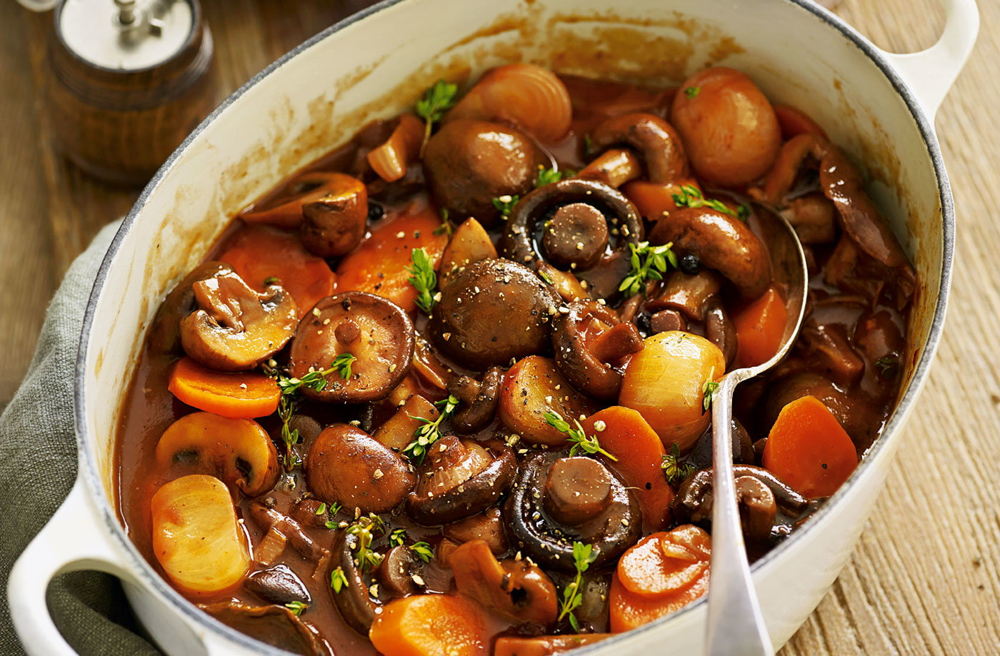

French-Style Mushroom Stew

Description
Mushrooms simmered with onions, wine, and carrots make for a rich, French-style stew.
Serve with egg noodles, polenta, or mashed potatoes.
Ingredients
- 16 ounces button mushrooms, chopped
- 8 ounces cremini mushrooms, chopped
- 8 ounces shiitake mushrooms, chopped
- 8 ounces oyster mushrooms, chopped
- 2 cups roughly chopped onion
- 6 tablespoons extra-virgin olive oil, divided, or to taste
- salt and freshly ground black pepper to taste
- 1 large leek, white and light green parts only, diced
- 2 medium carrots, thinly sliced
- 3 cloves garlic, crushed and minced
- 1 tablespoon tomato paste
- 2 ½ tablespoons all-purpose flour
- 1 ½ cups dry red wine
- 1 ½ cups vegetable broth
- 1 tablespoon tamari, or to taste
- ¼ teaspoon cayenne pepper, or to taste
- 3 sprigs fresh thyme, chopped
- 2 bay leaves, or more to taste
Steps
- Combine all four mushroom types in a large bowl with onions; toss gently to mix.
- Heat 2 tablespoons oil in a very large pot over medium-high heat. Cover the bottom of the pot with one layer of the mushroom-onion mixture. Cook, without moving them around too much, until they begin to brown and caramelize on one side, 3 to 5 minutes. Stir and cook another 3 to 5 minutes to brown the other side. Transfer to a large bowl using a slotted spoon. Add 2 tablespoons oil to the pot,
and repeat with another batch. Continue until all mushrooms and onions are cooked.
- Season mushroom-onion mixture with salt and pepper.
- Reduce heat to medium-low and 1 tablespoon oil to the pot. Add leek and carrots and saute until leeks turn a light golden color and start to soften, about 5 minutes. Add garlic and saute until fragrant, about 1 minute. Stir in tomato paste; cook for 1 minute. Add flour; cook and stir for 1 more minute.
- Add wine, vegetable broth, tamari, cayenne, thyme, and bay leaves, and scrape up the brown bits at the bottom of the pot with a wooden spoon. Carefully add the mushroom-onion mixture. Bring to a simmer.
- Reduce heat to low and simmer, partly covered, until carrots and onions are tender and sauce has thickened, 30 to 40 minutes.